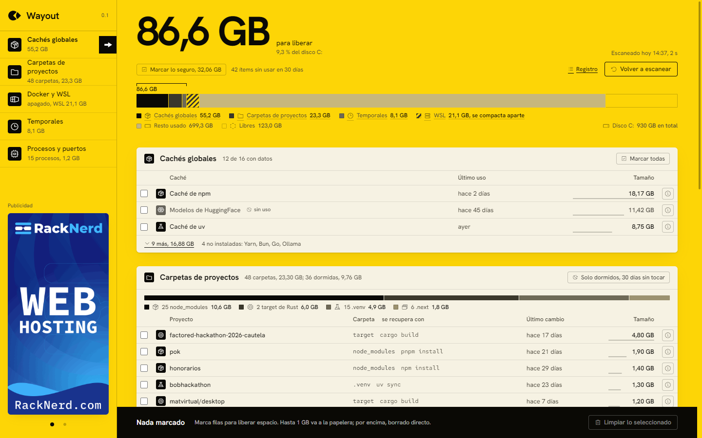

Lo que sobra de programar con IA, fuera del disco.
Wayout mide cuánto ocupan las cachés de npm, pip, uv y Gradle, las carpetas node_modules y target de proyectos que ya no tocas, los temporales, Docker y el disco de WSL. Te enseña la lista, con lo que se recupera cada cosa y con qué comando, y limpia solo lo que marcas.
Versión 0.1 en pruebas. La descarga pública se abre cuando el instalador esté firmado.
Qué mide y qué limpia

- Cachés globales
npm, pnpm, Yarn, pip, uv, Gradle, Cargo, modelos de HuggingFace, navegadores de Playwright y Puppeteer, con el comando oficial de limpieza de cada una.
- Carpetas de proyectos
node_modules, .venv, target, .next y dist de los proyectos de Downloads, Documents y Desktop. Las que llevan 30 días sin tocarse se marcan como dormidas.
- Docker y WSL
Imágenes colgadas, contenedores parados, volúmenes sin uso y caché de construcción. El disco de WSL se mide y se explica cómo compactarlo.
- Temporales, procesos y puertos
El %TEMP% del usuario, los procesos de desarrollo vivos con su memoria y los puertos que siguen en escucha.
Reglas que no se negocian
Nunca borra sin que hayas visto cada ítem y confirmado. Cada fila dice cómo se regenera y su nivel de riesgo.
Hasta 1 GB va a la papelera de Windows y se puede restaurar. Por encima se borra directo, y la app lo avisa antes.
Solo cachés y carpetas regenerables. Código fuente, .env, .git y bases de datos quedan fuera siempre.
La app se sostiene con un banner y un panel de patrocinadores. Solo imagen y enlace, sin rastreadores. Cómo anunciarse.